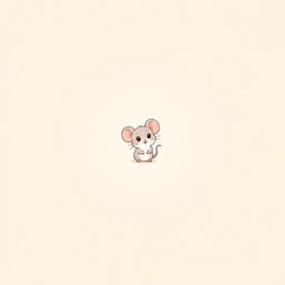
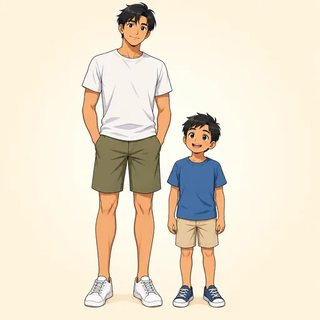
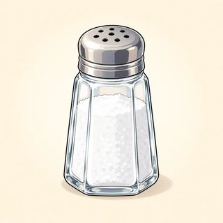
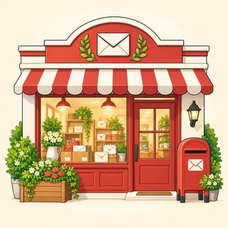
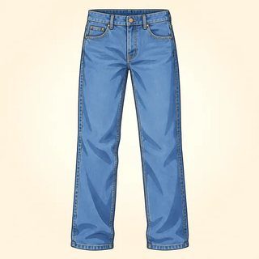
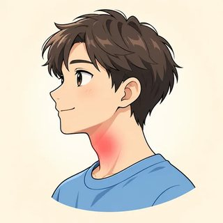

Everyday English (A2 Elementary)
Your English notebook for the whole course. Learn the words, practice the grammar, tell stories, make plans, and check what you can do.
Talking About the Past
Welcome to A2! Meet your new class. Say where you were and how it was. Tell people what you did. Ask "What did you do last weekend?" Now you can tell stories in English.
✏️ Write · 👂 Listen · 🗣️ Say · 👥 Work with a partner · 📖 Read
Your life is your choice. You can talk about your real day, or a new identity card, or a dream day. All are good.
Welcome to A2 · Was & Were
Class C1Write about you (real or a new identity). Then tell a classmate.
My name is . I'm (a job / a student / a parent…).
I like . I don't like .
On Sunday, I usually .
I can . I can't (yet!).
👥 Names of 3 classmates: · ·
 happy
happy sad
sad angry
angry excited
excited nervous
nervous worried
worried- 😴 tired
- 🏃 busy
 sunny
sunny cold
cold hot
hot- 👥 crowded
👂 Past time words:
| Now (A1) | Past (A2) | Example |
|---|---|---|
| I am · he / she / it is | was | I was tired. She was at home. |
| you / we / they are | were | We were happy. You were right. |
| ❌ No | wasn't · weren't | He wasn't at work. They weren't late. |
|---|---|---|
| ❓ Question | Was / Were + person…? | Were you at home? Was it cold? |
| 💬 Answer | Yes, I was. / No, I wasn't. | Yes, they were. / No, they weren't. |
| ❓ Wh- | How / Where + was / were…? | How was your weekend? Where were you? |
| 🏙️ Place | There was (1) · There were (2+) | There was a café. There were many people. |
you is always were (one person or many). No did with was/were: Were you there? (not "Did you were…")
1. I at home last night.
2. They very friendly.
3. The movie boring.
4. We late for the bus.
5. You right!
6. My sister nervous before the interview.
Example: She was at work. → She wasn't at work. → Was she at work?
1. They were at the party. → → ?
2. It was cold yesterday. → → ?
3. You were tired. → → ?
4. The store was open. → → ?
Listen to Nora and Sam. Circle T (true) or F (false).
1. Sam was at work on Saturday. T / F
2. Sam's Saturday was quiet. T / F
3. Sam was tired. T / F
4. On Sunday, Sam's brother was at Sam's apartment. T / F
5. Nora was at home on the weekend. T / F
6. The weather was cold for Nora. T / F
1. I was at the doctor's ( last / ago ) Monday.
2. We were in the park two hours ( last / ago ).
3. She was at the market ( yesterday / last yesterday ).
4. ( There was / There were ) a lot of people at the beach.
5. ( There was / There were ) a small café near the hotel.
6. ( Was there / Were there ) any free tables?
Where were you? How were you? Write 4 sentences. (Real, or a new identity.)
Example: At 8 a.m. I was on the bus. I was sleepy. In the evening I was at home. It was quiet.
A: How was your weekend?
B: It was great! I was at the beach with my family.
A: Nice! Was the weather good?
B: Yes, it was sunny. There were a lot of people on the beach, but it wasn't too crowded.
A: Were your kids happy?
B: Very! They weren't tired at all. I was the tired one!
1. Your teacher gives you a card (A or B). Ask your partner: "Where was Omar on Saturday? How was it?" Write the answers.
2. Now ask about your partner's weekend. Write ✓ notes.
| Question | My partner |
|---|---|
| How was your weekend? | |
| Where were you on Saturday? | |
| Where were you on Sunday? | |
| Was the weather good? | |
| Were you tired / happy / busy? |
🗣️ Tell the class: "Ana was at the park on Sunday. It was sunny."
- ☐ meet new classmates and talk about me
- ☐ say where I was and how it was: I was at home. It was quiet.
- ☐ say "no" with wasn't / weren't
- ☐ ask "How was your weekend? Where were you?" and answer
- ☐ use yesterday, last week, two days ago, There was / There were
Where was I yesterday? How was I? (At 8 a.m. I was… I was…)
What I Did — Regular Verbs (-ed)
Class C2Say each verb. Is the end /t/, /d/ or /ɪd/?
- 💼 worked /t/
 played /d/
played /d/ watched /t/
watched /t/ studied /d/
studied /d/ cooked /t/
cooked /t/ cleaned /d/
cleaned /d/ walked /t/
walked /t/- 💬 talked /t/
- 🎧 listened /d/
 arrived /d/
arrived /d/- 🏁 started /ɪd/
- ✅ finished /t/
- 💭 wanted /ɪd/
 visited /ɪd/
visited /ɪd/- 🏠 stayed /d/
 called /d/
called /d/
| Everyone! | I / you / he / she / it / we / they worked yesterday. |
|---|---|
| No -s | She worked. (not "workeds") |
| Spelling | How | Examples |
|---|---|---|
| most verbs | + ed | work → worked · play → played |
| ends in -e | + d | like → liked · live → lived |
| consonant + y | y → ied | study → studied · try → tried |
| short word: vowel + consonant | double + ed | stop → stopped · plan → planned |
| Sound | When? | Examples |
|---|---|---|
| /t/ 🤫 | no buzz before (k, p, s, sh, ch, f) | worked · watched · stopped |
| /d/ 🐝 | buzz before (vowels, l, n, r, v…) | played · called · lived |
| /ɪd/ 👏 | after t or d: one more beat | want-ed · need-ed · start-ed |
✋ Hand on your throat. Buzz? → /d/. No buzz? → /t/. worked = 1 beat. wanted = 2 beats.
1. stop → 2. study → 3. live → 4. play →
5. watch → 6. plan → 7. try → 8. dance →
Say each verb. Write it in the right box.
wanted · played · cooked · arrived · visited · walked · cleaned · needed · liked · danced · called · started
| /t/ 🤫 | /d/ 🐝 | /ɪd/ 👏 |
|---|---|---|
What did Rosa do first? Write 1, 2, 3…
- a
- b

- c
- d

- e
- f

Write the past form of the verb.
1. Yesterday I (start) work early.
2. At lunch I (call) my friend.
3. After work I (cook) dinner.
4. Then I (watch) a movie and (study) for an hour.
5. I (stay) home all evening.
6. My son (help) me, and we (clean) the kitchen.
🗣️ Read your story to a partner. Say every -ed the right way!
Write 6 sentences. Use and and then. Use a time word. (Real, or a new identity.)
Example: Yesterday I worked in the morning. Then I walked to the park and called my brother.
A: What did you do yesterday?
B: I worked in the morning, and then I cleaned my apartment.
A: Nice. And in the evening?
B: I cooked dinner, watched a movie, and called my sister. We talked for an hour.
A: I studied all day. My exam started this morning!
B: Oh! How was it?
A: It finished an hour ago. I think I passed!
"What did you do?" = a question about the past. We learn did in the next class.
1. Picture story. Tell your partner the story on your card (Maria's Saturday or Sam's Sunday). Your partner numbers the pictures.
2. My day. Tell a new partner about your day yesterday: 6 sentences. Your partner tells it back: "You worked, then you…"
- ☐ make the past with -ed: I worked. She worked.
- ☐ spell -ed verbs: liked, studied, stopped
- ☐ say -ed three ways: /t/ worked, /d/ played, /ɪd/ wanted
- ☐ tell my day yesterday in 6 sentences with and / then
What did I do yesterday? Write the sound: cooked = /t/.
Irregular Verbs, didn't & Did…?
Class C3No -ed! Learn them in small groups.
 go → went
go → went have → had
have → had- 🧹 do → did
- 🎬 see → saw
- get → got
 make → made
make → made- 🚪 come → came
 take → took
take → took eat → ate
eat → ate drink → drank
drink → drank buy → bought
buy → bought give → gave
give → gave find → found
find → found- 💡 know → knew
- 🤔 think → thought
- 🗨️ say → said
- 📢 tell → told
- 🤝 meet → met
 write → wrote
write → wrote read → read /rɛd/
read → read /rɛd/
Families: buy → bought, think → thought · drink → drank, swim → swam, sing → sang · say → said, pay → paid
| ✅ Yes | I went to the market. · I watched TV. |
|---|---|
| ❌ No | I didn't go to the market. · I didn't watch TV. |
| ❓ Question | Did you go to the market? · Did she watch TV? |
| 💬 Answer | Yes, I did. / No, I didn't. |
| ❓ Wh- | What did you do? · Where did you go? · Who did you meet? |
After did and didn't → the base verb: I didn't go. (not "didn't went") · 1 past word is enough!
be → Were you at home? · action verb → Did you stay home?
1. go → 2. see → 3. buy → 4. take →
5. eat → 6. think → 7. give → 8. tell →
9. make → 10. drink → 11. meet → 12. write →
Example: I saw the movie. → I didn't see the movie.
1. She had breakfast. →
2. They went to the beach. →
3. We watched TV. →
4. He bought a ticket. →
5. I ate lunch at work. →
a. Make a question. Example: You went home. → Did you go home?
1. They saw the show. → ?
2. She made dinner. → ?
3. You met your friend. → ?
4. He read the email. → ?
5. You took the bus. → ?
b. 👂 Listen to your teacher. Answer about you: Yes, I did. / No, I didn't.
1. 2. 3.
4. 5.
Circle T (true) or F (false).
1. They went to the market on Saturday. T / F
2. They took a taxi. T / F
3. The speaker bought a scarf. T / F
4. Dina bought some fruit. T / F
5. They ate lunch at home. T / F
6. They saw a musician. T / F
1. you / did / what / do / last weekend → ?
2. go / where / they / did → ?
3. did / meet / who / you → ?
4. ( Were / Did ) you at home last night?
5. ( Was / Did ) she go to work yesterday?
6. ( Were / Did ) they tired after the trip?
A: What did you do last weekend?
B: I went to the mountains with friends. We took the train.
A: Nice! Did you have a good time?
B: Yes, we did! We walked a lot and saw a lake.
A: Did you take any photos?
B: I didn't, but my friend did. Where did you go?
A: I didn't go anywhere. I stayed home and read a book.
Stand up. Ask 4 classmates. Write short notes. (Real, a new identity card, or a dream weekend!)
| Name | Where did you go? | What did you do? | Did you have a good time? |
|---|---|---|---|
🗣️ Tell the class: "Yusuf went to the market. He bought a shirt. He didn't cook."
✏️ My one-minute story. A good day or trip. Write 5–7 past verbs (regular + irregular) to help you:
- ☐ say 20 irregular verbs: went, had, saw, bought…
- ☐ say "no" with didn't + verb: I didn't go.
- ☐ ask "Did you…?" and answer "Yes, I did. / No, I didn't."
- ☐ ask "What did you do? Where did you go?"
- ☐ tell a one-minute story about a day in the past
What did I do this week? What didn't I do? (On Monday I had… I didn't…)
You can talk about the past! You can say where you were, what you did, and ask "What did you do last weekend?" Look at your three "I can…" lists. Is a box empty? Tell your teacher. Practice at home with the online lessons 1.1, 1.2 and 1.3 and the 🔊 buttons.
Describing & Comparing
Which one is cheaper? What is in the kitchen? How often do you cook, and how well? In this module you learn to compare things, talk about amounts, and describe what you do.
✏️ Write · 👂 Listen · 🗣️ Say · 👥 Work with a partner · 📖 Read
Your life is your choice. You can talk about your real city, kitchen and week, or use a card from your teacher, or imagine one. All are good.
Comparatives & Superlatives
Class C4You know these words from A1. Say each word and its opposite.
- big

small
tall expensive
expensive- 🏷️ cheap
- hot
- cold
 beautiful
beautiful- 🐇 fast
- 🐢 slow
- ✨ new
- 🏚️ old
- 🙂 easy
- 🧩 difficult
- 👍 good
- 👎 bad
| Compare TWO | short word + -er + than | The bus is cheaper than the train. |
|---|---|---|
| more + long word + than | The hotel is more expensive than the hostel. | |
| Number ONE of 3+ | the + short word + -est | It's the cheapest phone in the shop. |
| the most + long word | It's the most expensive restaurant in town. |
| nice | nicer | the nicest |
|---|---|---|
| happy | happier | the happiest |
| big | bigger | the biggest |
| good | better | the best |
| bad | worse | the worst |
| far | farther / further | the farthest / furthest |
Use one form only. ❌ more cheaper · ❌ the most biggest
Same? as … as: Tom is as tall as his father. · Not the same? not as … as: The bus is not as expensive as the taxi.
| Word | Compare two | Number one |
|---|---|---|
| cheap | cheaper | the cheapest |
| 1. big | ||
| 2. nice | ||
| 3. happy | ||
| 4. expensive | ||
| 5. hot | ||
| 6. easy | ||
| 7. beautiful | ||
| 8. good | ||
| 9. bad |
1. A taxi is faster a bus.
2. This is cheapest supermarket in town.
3. My English is better last year.
4. July is hottest month here.
5. Is Spanish easier English?
6. She is best cook in my family.
Two friends are hungry. There are three places to eat. Listen and write the missing words.
A: Where should we eat? There are three places near here.
B: Well, the pizza place is the , but the food isn't great.
A: The Thai restaurant is than the pizza place, right?
B: Yes, but it's much . Honestly, it's the food in the area.
A: And the sushi bar? Is it more expensive than the Thai place?
B: It's the of the three, and it's away too. Let's go Thai: better than sushi and !
Where do they go?
Each sentence has one mistake. Write it correctly.
1. This bag is more cheaper than that one. →
2. Tokyo is the most big city in Japan. →
3. My new job is more better than my old one. →
4. A plane is faster then a car. →
5. This is the most hot day of the year. →
| Café Sol | Bean House | The Corner | |
|---|---|---|---|
| ☕ a coffee | $2.00 | $3.50 | $4.75 |
| 🚶 walk from school | 5 minutes | 2 minutes | 12 minutes |
| ⭐ stars | ⭐⭐⭐ | ⭐⭐⭐⭐ | ⭐⭐⭐⭐⭐ |
| 📅 opened in | 2010 | 2021 | 1995 |
Use the word in ( ). Write the correct form.
1. Café Sol is than Bean House. (cheap)
2. The Corner is café. (old)
3. Bean House is than The Corner. (new)
4. The Corner is café. It has five stars. (good)
5. Coffee at The Corner is than at Café Sol. (expensive)
6. The Corner is from school. (far)
Now write two more sentences about the cafés.
Lina: I need to go downtown on Saturday. Is the bus or the train better?
Omar: The train is faster than the bus. It's only twenty minutes.
Lina: Is it more expensive?
Omar: Yes, a little. The bus is cheaper. It's two dollars. The train is three fifty.
Lina: Hmm. What's the easiest way?
Omar: The train, I think. The station is closer to your home, too.
Lina: OK, the train! It's the best way. Thanks!
Choose three cities, three foods, or three phones. (A city card from your teacher or a dream city is OK.) Write notes. Then tell your partner 4 sentences with than and 2 sentences with the.
| My three things | 1. ____________ | 2. ____________ | 3. ____________ |
|---|---|---|---|
| price / size | |||
| good / bad things | |||
| number one for… |
- ☐ compare two things with -er than and more … than
- ☐ say number one with the -est and the most
- ☐ spell nicer, happier, bigger
- ☐ use better, the best, worse, the worst
- ☐ ask for numbers and compare two cities or phones
Compare three places or foods you know. Use than and the.
Quantifiers — some, any, much, many
Class C5Can you count it (one, two, three)? Write C (countable) or U (uncountable) in the box after class.
 apple ☐
apple ☐ banana ☐
banana ☐ egg ☐
egg ☐- 🍅 tomato ☐
 rice ☐
rice ☐ bread ☐
bread ☐ milk ☐
milk ☐ water ☐
water ☐ sugar ☐
sugar ☐ cheese ☐
cheese ☐ coffee ☐
coffee ☐ butter ☐
butter ☐
salt ☐- juice ☐
 vegetables ☐
vegetables ☐- 💵 money ☐
Count uncountable things with a container:
| Countable 🥚🥚🥚 | Uncountable 🥛 | |
|---|---|---|
| ✅ a lot | a lot of eggs | a lot of milk |
| ❓ question | How many eggs? | How much milk? |
| ❌ not a lot | not many eggs | not much milk |
| a small amount | a few eggs | a little milk |
| ✅ Yes | some | There's some cheese. |
|---|---|---|
| ❌ No | any | There aren't any eggs. |
| ❓ Question | any | Is there any milk? |
| 🙂 Offer / ask | some | Would you like some tea? · Can I have some water? |
Surprise! These are uncountable: bread, money, information, furniture, homework. Say "some bread," not "a bread."
1. egg · 2. water · 3. banana · 4. rice
5. money · 6. tomato · 7. cheese · 8. bread
9. apple · 10. information · 11. bottle · 12. furniture
1. There's juice in the fridge.
2. We don't have tomatoes.
3. Is there rice?
4. I bought apples today.
5. Can I have water, please?
6. There isn't salt on the table.
1. How eggs do we need?
2. I don't have time today.
3. There are people at the market. (✅ yes sentence)
4. How water is in the bottle?
5. We don't have bananas.
6. She drinks coffee. (✅ yes sentence)
1. I take sugar in my tea.
2. Let's buy apples.
3. There's cheese in the fridge.
4. I have friends in this city.
5. Can I have milk, please?
1. eggs are there?
2. rice do we need?
3. are the bananas? (the price 💵)
4. bottles of water do you want?
5. money do you have with you?
a) What does the shopper buy? ✓ or ✗.
bread ☐ · tomatoes ☐ · rice ☐ · coffee ☐ · eggs ☐ · milk ☐
b) Listen again. Answer.
1. How many loaves of bread?
2. How many tomatoes?
3. How much rice: a small bag or a big bag?
4. How much is it all?
5. Why doesn't the shopper buy coffee?
Ana: Let's make pancakes! Do we have any eggs?
Ben: Yes, but only a few. There are three.
Ana: That's OK. How much milk is there?
Ben: Not much. Only a little. We need some milk.
Ana: And sugar?
Ben: There's a lot of sugar. We don't need any.
Ana: Great. Can you buy some milk and a few bananas?
Ben: Sure. How many bananas?
Ana: Four, please. Thanks!
In class: ask your partner about the kitchen on your card. "Is there any…? How much…? How many…?" Then choose a meal and write a shopping list. (Your real kitchen or an imagined kitchen is OK too.)
| We have… | We need… (how much? how many?) |
|---|---|
- ☐ say if a noun is countable or uncountable
- ☐ use some and any
- ☐ use much, many and a lot of
- ☐ use a few and a little
- ☐ ask "How much…?" and "How many…?"
- ☐ make a shopping list for a meal
A meal I like: what do I need? What don't I need?
Adverbs — How Often? How?
Class C6| always | ●●●●● | 100% |
|---|---|---|
| usually | ●●●●○ | 90% |
| often | ●●●○○ | 70% |
| sometimes | ●●○○○ | 50% |
| hardly ever | ●○○○○ | 10% |
| never | ○○○○○ | 0% |
- happily
- sadly
- angrily
- nervously
- 🐇 quickly
- 🐢 slowly
- 🧐 carefully
- 🤫 quietly
- 📢 loudly
- 👍 well
- 👎 badly
- 💪 hard
| main verb | adverb before the verb | She usually walks to work. |
|---|---|---|
| am / is / are | adverb after the verb | I am always tired on Monday. |
| How often? | at the end | I cook three times a week. |
| never | only one "no" | I never eat meat. ❌ I don't never… |
| quick → quickly | He eats quickly. |
|---|---|
| easy → easily | She finds it easily. |
| simple → simply | Please explain it simply. |
| good → well | She is a good singer. She sings well. |
| fast → fast · hard → hard | He runs fast. They work hard. (❌ fastly) |
How? words go after the verb + thing: He speaks English slowly. ❌ He speaks slowly English.
Example: I eat breakfast. (always) → I always eat breakfast.
1. I drink tea in the morning. (always) →
2. She is late for class. (never) ⚠️ is! →
3. We go to the movies. (sometimes) →
4. He checks his phone. (often) →
5. They are tired on Mondays. (usually) →
6. My brother cooks. (hardly ever) →
1. quick → · 2. slow → · 3. careful →
4. easy → · 5. happy → · 6. simple →
7. good → · 8. fast → · 9. hard →
1. She is a ( good / well ) teacher.
2. He plays the guitar ( good / well ).
3. They cook very ( good / well ).
4. That's a ( good / well ) idea!
5. My son speaks English ( good / well ).
6. This soup is ( good / well ).
1. B cooks at home almost .
2. After work, B cooks .
3. On Sundays, B cooks .
4. A cooks.
5. A orders food a week.
6. A goes running a week.
7. A runs quite , but doesn't swim .
Use always / usually / sometimes / never… or once a week, twice a month, every day…
1. How often do you exercise? →
2. How often do you cook dinner? →
3. How often do you call your family or friends? →
4. How often do you go to the supermarket? →
Write 4 true sentences: 2 with how-often words and 2 with how words. Underline the adverb.
Example: I usually get up at six. I drive carefully.
Maria: How often do you work on the weekend?
Sam: Once a month. I'm hardly ever here on Sunday.
Maria: I always work on Saturday. I'm usually tired on Monday!
Sam: You work hard. And you learn fast. Your English is really good.
Maria: Thanks! I speak slowly, but I speak carefully.
Sam: You speak well. Don't worry!
Tell your partner 6 sentences. (Your real week, a new identity card, or an imagined week.)
- 3 sentences: how often? "I always… I sometimes… I never…"
- 3 sentences: how? "I drive carefully. I sing badly! I cook well."
- Ask your partner one question: "How often do you…?"
- ☐ use always, usually, often, sometimes, hardly ever, never
- ☐ put the adverb before the verb, or after am / is / are
- ☐ ask "How often…?" and say once a week, twice a month
- ☐ make -ly words: quickly, carefully, easily
- ☐ choose good or well
- ☐ talk about my habits in 6 sentences
What do I always do? What do I do well?
You can compare things, talk about amounts, and say how often and how you do things. Look at your three "I can…" lists. Is a box empty? Tell your teacher. Practice at home with the online lessons 2.1, 2.2 and 2.3 and the 🔊 buttons.
Talking About the Future
Talk about your plans. Guess what will happen. Decide and help in the moment. Make plans with a friend. Now you can talk about the past, the present and the future!
✏️ Write · 👂 Listen · 🗣️ Say · 👥 Work with a partner · 📖 Read
Your plans are your choice. You can talk about your real plans, or a future identity card, or a dream future. All are good. You can always say "Pass."
My Plans — "Going to"
Class C7- 👪 visit my family
- 🎬 see a movie
 go hiking
go hiking go swimming
go swimming- play soccer
- go to the market
 eat out
eat out- cook something special
 relax at home
relax at home- 🧹 clean the house
 travel
travel learn to play the guitar
learn to play the guitar- 🚗 learn to drive
- 💼 start a new job
⏩ Future time words (now → later):
next + a time name: next Monday, next year. · in + how long from now: in two days, in an hour.
| ✅ Yes | I'm going to visit my sister. · She's going to study. · We're going to travel. |
|---|---|
| ❌ No | I'm not going to work. · He isn't going to come. · They aren't going to wait. |
| ❓ Question | Are you going to cook tonight? · Is she going to stay? |
| 💬 Answer | Yes, I am. / No, I'm not. · Yes, she is. / No, she isn't. |
| ❓ Wh- | What are you going to do? · Where is he going to go? |
After going to: the plain verb. I'm going to eat. (not "eating," not "to eat")
| 🧠 Plan | I decided before now. | I'm going to study English this year. |
|---|---|---|
| 👀 Prediction | I can see it coming. | Look at those black clouds! It's going to rain. |
Write ✓ (she's going to) or ✗ (she isn't going to).
- 👵 visit her aunt
- 🧹 clean the house
- 🎬 see a movie
- go shopping
- cook
- 🚗 drive
- 💼 work
 go to bed early
go to bed early
🗣️ Tell a partner: "She's going to… She isn't going to…"
Example: (I / visit / my aunt / on Sunday) → I'm going to visit my aunt on Sunday.
1. (I / cook / dinner / tonight) →
2. (She / study / next week) →
3. (We / travel / in the summer) →
4. (They / move / soon) →
5. (He / start / a new job / tomorrow) →
6. (you / call / me / tonight ?) → ?
Example: She's going to work tomorrow. → She isn't going to work tomorrow. → Is she going to work tomorrow?
1. They're going to help us. → → ?
2. You're going to call me tonight. → → ?
3. He's going to learn to drive. → → ?
4. I'm going to cook tonight. → → (you) ?
Write P (a plan: I decided) or E (a prediction: I can see it).
1. "Watch out! That glass is going to fall!"
2. "I'm going to learn to play the guitar this year."
3. "The sky is gray and windy. It's going to storm."
4. "We're going to get married in September."
5. "The bus is full. We're going to be late!"
6. "I'm going to call my brother tonight."
1. I'm going to visit my family ( next / in ) month.
2. Hurry! The movie starts ( next / in ) ten minutes.
3. We're going to move ( next / in ) year.
4. She's going to call you ( next / in ) two days.
5. I'm going to see the doctor ( next / in ) Tuesday.
My plans. Write 6 sentences with going to. Use a time word in each one. Write one "not" sentence and one prediction.
A: What are you going to do this weekend?
B: I'm going to visit my sister in the city. We're going to see a movie on Saturday.
A: Nice! Are you going to stay the night?
B: Yes, I am. I'm not going to drive back so late. What about you?
A: I'm going to relax at home. Look at the forecast, though. It's going to rain all day Sunday!
B: Ha! Then it's a good day to stay in. Are you going to cook something special?
A: Maybe. I'm going to try a new soup recipe. 🍲
✏️ First, write 3 plans. Real, a future identity card, or a dream: your choice.
| When? | I'm going to… |
|---|---|
| this weekend | |
| next month | |
| this year / next year |
🗣️ Then walk and ask: "Are you going to … this weekend?" Write names on the Find Someone Who sheet.
🗣️ Tell the class: "Ana is going to visit her family next month."
- ☐ say my plans with going to: I'm going to visit my sister.
- ☐ say "no" and ask: I'm not going to… / Are you going to…?
- ☐ make a prediction when I can see it: It's going to rain!
- ☐ use tonight, tomorrow, next week, in two days…
- ☐ talk about my plans in 6 sentences
What am I going to do next week? What can I see right now? (a prediction)
Will & Might — Guesses and Quick Decisions
Class C8- sunny
 rainy
rainy- ☁️ cloudy
- 💨 windy
- ❄️ snowy / snow
- ⛈️ stormy / a storm
- hot
- cold
| ✔✔ 100% | ✔ 80% | ? 50% | ✘ 20% | ✘✘ 0% |
|---|---|---|---|---|
| will | will probably | might | probably won't | won't |
| ✅ Yes | I / You / He / She / We / They will ('ll) + verb | It'll be sunny. · She will come. |
|---|---|---|
| ❌ No | won't (= will not) + verb | I won't forget. · It won't rain. |
| 🤷 Maybe | might / might not + verb | I might go. · We might not have time. |
| ❓ Question | Will + you + verb? | Will you be there? |
| 💬 Answer | Yes, I will. / No, I won't. | (not "Yes, I'll.") |
Same for everyone. No -s, no to: She will come. He might be late.
| 🔮 I think | a prediction | I think our team will win. |
|---|---|---|
| ⚡ I decide now | a quick decision | The phone's ringing. — I'll get it! |
| 🤝 I help / I promise | an offer or a promise | That bag is heavy. I'll carry it. · I won't forget. |
Plan from before → going to. Decide now / I think → will. Not sure → might.
Write the weather. Then circle: sure (will) or not sure (might)?
| Day | The weather | Sure or not sure? |
|---|---|---|
| Friday | will / might | |
| Saturday afternoon | will / might | |
| Sunday | will / might | |
| Monday | will / might |
1. Don't worry, I forget your birthday. (a promise)
2. I think our team win. They're the best!
3. The sky is very dark, so I'm sure it be sunny this afternoon.
4. That box is heavy. I carry it for you. (an offer)
5. He's always late, so he probably be on time.
Example: I will go to the party. → I might go to the party.
1. We will travel next summer. →
2. She will be at the meeting. →
3. They will move to a new city. →
4. It won't rain. (maybe not) →
1. The phone's ringing!
2. This bag is really heavy.
3. It's cold in here.
4. I'm so thirsty.
5. I don't understand the homework.
6. Don't forget my birthday!
a. I'll close the window.
b. I'll help you after class.
c. I'll get it!
d. I won't, I promise.
e. I'll carry it for you.
f. I'll get you some water.
1. You decided last week to visit Rome in July. → "I visit Rome in July."
2. The phone rings. You decide to answer it now. → "I answer it."
3. Your friend's bags are heavy. You offer to help. → "I help you."
4. This morning you planned to cook pasta tonight. → "I cook pasta tonight."
5. At a café, the server asks, "What would you like?" You decide now. → "I have a tea, please."
A: The movie starts in ten minutes and I can't find my phone!
B: Don't panic. I'll help you look for it.
A: Thanks. Do you think we'll be late?
B: No, I think it'll be fine. There it is! I'll get it for you.
A: You're a lifesaver. I'll buy the popcorn, then.
B: Deal! I might get a lemonade too. I'm not sure yet.
✏️ Write about next year or the world in 20 years. Real or a dream: your choice.
| will ✔✔ | 1. |
|---|---|
| will ✔✔ | 2. |
| won't ✘✘ | 3. |
| won't ✘✘ | 4. |
| might ? | 5. |
| might ? | 6. |
🗣️ Tell your partner. Your partner says: "I agree!" or "I don't think so. I think…"
- ☐ make a prediction with will / won't: I think it'll rain.
- ☐ say "maybe" with might: I might go to the party.
- ☐ decide or help in the moment: I'll get it! I'll carry it.
- ☐ make a promise: I won't forget.
- ☐ ask "Will you…?" and answer "Yes, I will. / No, I won't."
My life in five years (real or a dream): one will, one might.
Making Plans Together
Class C9- 🎬 see a movie
- have dinner out
- get a coffee
- go to the park
- go to the market
 go dancing
go dancing- watch a soccer game
- meet at the station
📅 Time words for plans:
| 📅 My diary | am / is / are + verb-ing + time | I'm meeting Sara on Friday. · We're leaving at 6. |
|---|---|---|
| ❌ No | 'm not / isn't / aren't + -ing | I'm not working tomorrow. |
| ❓ Question | Are you + -ing…? | Are you doing anything tonight? |
The time word decides! I'm working now. = present · I'm working tomorrow. = future
| + plain verb | Let's go to the park. · Why don't we eat out? · Shall we / Should we meet at 7? |
|---|---|
| + -ing / a thing | How about watching a movie? · How about Saturday? |
| Invite | Would you like to come to dinner? · (friends) Do you want to get a coffee? |
Good idea! · Sure, that sounds great. · Yes, I'd love to! · Perfect, see you then!
Sorry, I can't. · I'd love to, but I'm busy. · Maybe another time. · Thanks, but I already have plans.
Write N (now) or F (future). Look at the time word!
1. I'm working now.
2. I'm working tomorrow.
3. She's cooking for us on Sunday.
4. They're watching TV at the moment.
5. We're flying to Miami next month.
6. Shh! The baby is sleeping.
Example: (I / see / the dentist / on Monday) → I'm seeing the dentist on Monday.
1. (We / leave / at 6 o'clock) →
2. (She / start / her new job / next week) →
3. (I / not work / tomorrow) →
4. (you / do / anything / tonight ?) → ?
5. (They / fly / to Rome / on Friday) →
Idea A: go to the beach
1. Let's .
2. Why don't we ?
3. How about ?
Idea B: have a picnic in the park
4. Let's .
5. Why don't we ?
6. How about ?
1. Would you like to come to dinner tonight?
2. Shall we play tennis on Saturday?
3. Do you want to get a coffee now?
4. Let's go dancing on Friday!
a. Yes, I'd love to! What time?
b. Sorry, I can't. I'm working late tonight.
c. I'd love to, but I'm playing soccer on Saturday.
d. Maybe another time. I'm a little busy right now.
1. What does Leo suggest first?
2. Why can't Grace go on Friday?
3. What day are they meeting?
4. What time?
5. Where?
6. Where are they having lunch?
Mia: Are you doing anything this weekend?
Ben: Not really. Why?
Mia: How about seeing a movie? There's a new comedy.
Ben: Good idea! Shall we go on Saturday?
Mia: Saturday's hard. I'm meeting my sister in the afternoon. Why don't we go on Sunday instead?
Ben: Sure, that sounds great. What time?
Mia: Let's meet at 6, and we can eat first.
Ben: Perfect. So we're meeting at 6 on Sunday. See you then!
✏️ Write 4 plans in your diary (real, a future identity card, or imagined). Use -ing: "meeting Tom," "working."
| Afternoon | Evening | |
|---|---|---|
| Monday | ||
| Tuesday | ||
| Wednesday | ||
| Thursday | ||
| Friday | ||
| Saturday | ||
| Sunday |
🗣️ Find a free time with a partner: "Are you doing anything on…?" → "Let's… / How about…?" → "So we're meeting on … at … See you then!"
- ☐ talk about plans in my diary: I'm meeting Sara on Friday.
- ☐ hear "now" or "future" from the time word
- ☐ suggest: Let's… / Why don't we…? / How about …ing?
- ☐ say yes, or say no nicely with a reason
- ☐ arrange to meet a friend and confirm the plan
One plan in my week (with -ing). One idea for a friend: "Let's…"
You can talk about your plans, guess the future, decide and help in the moment, and make plans with a friend. Look at your three "I can…" lists. Is a box empty? Tell your teacher. Practice at home with the online lessons 3.1, 3.2 and 3.3 and the 🔊 buttons.
Experiences & Advice
Talk about the things you have done in your life. Explain rules and give good advice. Then tell a travel story with all the English you know. You are halfway through A2!
✏️ Write · 👂 Listen · 🗣️ Say · 👥 Work with a partner · 📖 Read
Your life is your choice. You can talk about your real life, or use a card, or imagine. You can always say "Pass!" or "I'd rather not say." That is OK.
Have You Ever…? — Life Experiences
Class C10- fly in a plane
- 🐎 ride a horse
- swim in the ocean
- climb a mountain
 sing karaoke
sing karaoke eat sushi
eat sushi- cook for ten people
- lose your phone
 break a bone
break a bone- ⭐ meet a famous person
- ❄️ see snow
 be (been) to another country
be (been) to another country
| ✅ Yes | I / You / We / They have ('ve) + been | I've been to Canada. |
|---|---|---|
| ✅ Yes | He / She has ('s) + eaten | She's eaten sushi. |
| ❌ No | haven't / hasn't · have never | I've never broken a bone. |
| ❓ Question | Have you ever + participle? | Have you ever ridden a horse? |
| 💬 Answer | Yes, I have. / No, I haven't. / No, never. |
No time word? → present perfect: I've been to Mexico.
A time word (last year, in 2019, yesterday)? → past simple: I went to Mexico in 2019.
🔁 Open, then explain: "Have you ever been to Mexico?" "Yes, I have." "When did you go?" "I went in 2019. It was great!"
been = went and came back 🔁 · gone = went and is still there ➡️
| Base | Past | Past participle |
|---|---|---|
| see | saw | |
| eat | ate | |
| go (experience) | went | |
| write | wrote | |
| try | tried | |
| drink | drank | |
| take | took | |
| ride | rode | |
| meet | met | |
| break | broke |
What has Lina done? Write ✓ or ✗. If ✓, write when.
| Has Lina ever…? | ✓ / ✗ | When? |
|---|---|---|
| been to another country | ||
| seen snow | ||
| ridden a horse | ||
| eaten sushi | — | |
| met a famous person | — |
Look for a time word! 🔎
1. I ( have visited / visited ) Chicago. It's a great city!
2. She ( has visited / visited ) Chicago last summer.
3. We ( have never eaten / never ate ) octopus.
4. They ( have seen / saw ) that movie on Saturday.
5. Have you ever ( been / went ) to Canada?
6. "Have you ever lost your phone?" "Yes, I have. I ( have lost / lost ) it on the bus two weeks ago."
7. He ( has broken / broke ) his arm in 2020.
8. I ( have tried / tried ) Thai food, but I don't remember when.
Example: (be / to Mexico) → Have you ever been to Mexico? → Yes? → When did you go?
1. (see / a whale) → ? → Where did you it?
2. (meet / a famous person) → ? → Who did you ?
3. (cook / for ten people) → ? → What did you ?
4. (ride / a horse) → ? → When did you it?
1. Where's Maria? — She's to the store. She'll be back soon.
2. I've to Texas three times. I love it there.
3. Is Omar here? — No, he's home. He was sick.
4. Have you ever to New York?
A: Have you ever been to another country?
B: Yes, I have! I've been to Thailand.
A: Wow! When did you go?
B: I went there in 2018. I ate amazing street food and I saw beautiful temples. Have you ever tried Thai food?
A: No, I haven't. I've never eaten it. But I've been to Italy. I love the pizza there!
B: Nice! Where's your brother today? I haven't seen him.
A: Oh, he's gone to the airport. He's flying to Italy tonight!
🔎 Underline the present perfect. Circle the past simple. Where does the speaker switch?
Ask Have you ever…? If the answer is "Yes," ask one more question in the past: When / Where / Who with / How was it?
| Have you ever…? | Yes / No | Detail (past simple) |
|---|---|---|
| 1. | ||
| 2. | ||
| 3. | ||
| 4. | ||
| 5. | ||
| 6. |
🗣️ Tell the class: "Amir has ridden a horse. He rode one in Morocco when he was ten."
Write 3 things you have done and 2 things you have never done. Then add one detail with a time.
I've
I've
I've
I've never
I've never
Detail: (last year / in 2020 / when I was…)
- ☐ say 10 past participles (been, seen, eaten, done…)
- ☐ ask "Have you ever…?" and answer "Yes, I have. / No, I haven't. / No, never."
- ☐ switch to the past simple for the details: "When did you go?" "I went in 2019."
- ☐ say "I've never…" (no "not")
- ☐ choose been or gone
Something I've done. Something I've never done, but I want to do.
Have to / Must / Should — Rules & Advice
Class C11- 🦺 wear a safety vest
- 🪪 wear a badge
- 🧼 wash your hands
- use your phone
- 🚭 smoke
 buy a ticket
buy a ticket- ✍️ sign a form
 see a doctor
see a doctor- drink water
- go to bed early
- ☕ take a break
- take an umbrella
| 🟢 Do it (a rule) | I / you / we / they have to · he / she has to · must | I have to wear a uniform. You must stop. |
|---|---|---|
| 🟡 Your choice | don't / doesn't have to | You don't have to pay. It's free. |
| 🔴 Don't do it | mustn't (or can't) | You mustn't smoke here. |
| 💡 Good idea | should | You should see a doctor. |
| 👎 Bad idea | shouldn't | You shouldn't worry so much. |
| ❓ Question | Do I have to…? · Should I…? | Do I have to sign? What should I do? |
⚠️ don't have to ≠ mustn't. "You don't have to come" = your choice 🙂. "You mustn't come" = not allowed 🚫.
After all of them: the base verb. You must to go. She has to works work.
| Sign | Rule | |
|---|---|---|
| 1. 🚭 NO SMOKING | a. You don't have to pay. | |
| 2. 🧼 STAFF MUST WASH HANDS | b. You have to be quiet. | |
| 3. 🎟️ FREE ENTRY TODAY | c. You mustn't smoke here. | |
| 4. 🤫 QUIET PLEASE — LIBRARY | d. Workers have to wash their hands. | |
| 5. 📵 NO PHONES | e. You mustn't use your phone. | |
| 6. 🦺 SAFETY VEST REQUIRED | f. You have to wear a vest. |
Write has to, doesn't have to, mustn't or should.
1. Sam wear a badge.
2. He wear a suit.
3. He use his phone in the kitchen.
4. He sign a form at reception.
5. He bring lunch. There's a free lunch.
6. He go to bed early tonight.
1. It's a work rule: everyone wears a badge. → You ( have to / mustn't ) wear a badge.
2. The museum is free today. → You ( don't have to / mustn't ) pay.
3. The sign says "No phones." → You ( don't have to / mustn't ) use your phone.
4. It's Saturday, her day off. → She ( doesn't have to / mustn't ) work today.
5. The road rule: stop at a red light. → You ( have to / don't have to ) stop.
6. My son's school has a uniform. → He ( has to / have to ) wear a blue shirt.
1. You must to show your ticket. →
2. She should to see a doctor. →
3. He have to work on Sunday. →
4. She has to works late. →
5. Do I must sign here? →
1. "I'm very tired." → You
2. "I want to learn English faster." → You
3. "I ate too much and now I feel sick." → You
4. "I'm always late for work." → You
5. "My new neighbors are very noisy at night." → Maybe you
A: I'm not feeling well, and I start my new job tomorrow.
B: Oh no. You should drink some water and go to bed early. You shouldn't stay up late.
A: Good idea. Do I have to wear a suit? I'm not sure of the rules.
B: You don't have to wear a suit. It's a relaxed office. But you can't be late on your first day!
A: Got it. Should I bring anything?
B: You should bring your ID. And you have to sign a form at reception. Everyone does.
Groups of 3. The reader reads a problem card. The two advisers give advice.
✏️ Our best advice:
1. At work / school / home, I have to
2. On Sunday, I don't have to
3. I think I should more often.
- ☐ say 3 rules with have to / has to / must
- ☐ ask "Do I have to…?"
- ☐ say the difference: don't have to (my choice) and mustn't (not allowed)
- ☐ give friendly advice: "Maybe you should…"
- ☐ use the base verb: must go, should go (no "to")
One thing I have to do this week. One piece of advice for a new student in our class.
Review Project — My Travel Story
Class C12No new grammar! Today you tell a travel story, real or imagined, with everything you know. Any trip is good: a day at the beach, a visit to family, a work trip, a dream trip, or a trip card.
- airport
- flight
- ticket
- station / platform
 luggage
luggage- passport
 hotel · reservation
hotel · reservation- key card
- 🧳 check-in · check-out
- 🗺️ map · tour
- 🎁 souvenir
 How much is it?
How much is it?
⚠️ luggage: no "a," no "-s." Say some luggage or two bags.
| ✈️ Airport / station | Where's the check-in? · A ticket to Denver, please. · What time does it leave? · What time does it arrive? · Which platform is it? · Is this the right gate? |
|---|---|
| 🏨 Hotel | I have a reservation. · Do you have any rooms? · Is breakfast included? · What time is check-out? · Is there Wi-Fi in the room? |
| 🙋 Getting help | Excuse me, can you help me? · How do I get downtown? · Is it far? · Can you say that again, please? · How much is it? |
🙏 Be polite: Excuse me, … please.
a) Write the phrase.
1. You want a train ticket to Boston. You say:
2. You arrive at your hotel. You booked a room online. You say:
3. You are lost. You need to go downtown. You say:
4. You want to know when you have to leave your room. You ask:
b) 👂 Listen and write the sentences.
1.
2.
3.
4.
| ① Scene | was / were | It was spring. The streets were busy. |
|---|---|---|
| ② What I did | past simple | We arrived at night and took a taxi. |
| ③ Compare | -er than · the most · a lot of / a few | The beach was quieter than the city. There were a lot of tourists. |
| ④ Experience | present perfect | I've never eaten fish like that. It was the best trip I've ever had. |
| ⑤ Next time | going to / will | Next year I'm going to go back. I think I'll stay longer. |
1. Last summer we (go) to the beach in Florida.
2. The beach (be) beautiful, and there (be) a lot of little shops.
3. The water was (warm) than at home.
4. I (never / try) surfing. I want to try it next year!
5. It was the best vacation I (ever / have).
6. Next year I'm (visit) my cousin in Texas.
a) Number the parts of her story 1–5.
Next year she's going to visit the mountains.
It was her first time in a big city. It was cold and windy.
She has never seen a building so tall.
She took the train, visited a museum and ate at a market.
The museum was busier than the park. There were a lot of tourists.
b) Circle the linking words you hear.
Use so, but or because.
1. We arrived late. We were tired. → We arrived late, we were tired.
2. The hotel was small. It was very clean. → The hotel was small, it was very clean.
3. I took a taxi. It was raining. → I took a taxi it was raining.
4. The museum was free. We went twice. → The museum was free, we went twice.
Write notes, not sentences (3–6 words in each box). Or draw a small picture.
| ① Scene Where? When? Who with? What was it like? | |
|---|---|
| ② What I did 3 things (past simple) | |
| ③ Compare bigger / the best / a lot of… | |
| ④ Experience I've never… before · the best… I've ever… | |
| ⑤ Next time I'm going to… · I think I'll… |
Linking words I will use: · ·
A travel phrase for my story:
Traveler: Excuse me, a ticket to Denver, please. What time does it leave?
Clerk: The next train leaves at 9:15, from platform 4.
Traveler: Great. And what time does it arrive?
Clerk: At 11:40. Here's your ticket.
Guest: Hello, I have a reservation. The name is Silva.
Receptionist: Welcome! A room for two nights. Here's your key card.
Guest: Thank you. Is breakfast included?
Receptionist: Yes, from 7 to 10. Check-out is at 11 a.m. Enjoy your stay!
Tell your story to a partner. Your partner asks one question for each step:
① Where did you go? · ② What did you do? · ③ How was it? · ④ Have you ever…? · ⑤ What are you going to do next time?
Your partner says: "I liked the part about ."
Then tell it again to a new partner, faster! Then tell it in your group.
- ☐ ask for a ticket and check in at a hotel, politely
- ☐ set the scene with was / were
- ☐ say 3 things I did (past simple)
- ☐ compare places and say "a lot of / a few"
- ☐ say an experience: "I've never… before" / "the best… I've ever…"
- ☐ say my plan: "Next time I'm going to…"
- ☐ join my story with first, then, but, so, because
- ☐ tell my whole story (3–5 minutes) and answer questions
Something I can do now that I couldn't do in Week 1:
Something I want to practice before the check (C13):
Write your story. Underline one past, one comparative, one present perfect and one future.
Telling Stories
Freeze a moment in the past. Tell what happened. Talk about how life used to be. Every good story starts here!
✏️ Write · 👂 Listen · 🗣️ Say · 👥 Work with a partner · 📖 Read
Your stories are your choice. You can tell a true story, or invent one, or use a character card. All are good. At home, open the online lesson and press 🔊 to listen.
I did well in .
I want to practice .
I can do it! Every week I will .
What Were You Doing? — Past Continuous
Class C14- cooking dinner
- reading a book
- watching TV
 taking a shower
taking a shower- sleeping
- studying
- dancing
- singing
- playing the guitar
 waiting for the bus
waiting for the bus- talking on the phone
- raining
| ✅ Yes | I / he / she / it was cooking. · You / we / they were cooking. |
|---|---|
| ❌ No | I wasn't sleeping. · They weren't working. |
| ❓ Question | Were you sleeping? · What were you doing at nine? |
| 💬 Answer | Yes, I was. / No, I wasn't. · Yes, they were. / No, they weren't. |
| 👯 Two at once | While I was reading, she was cooking. |
Two parts, every time: was/were + verb-ing. Not for know, like, want, need, love: say "I knew the answer."
What were the neighbors doing? Write the letter. One picture is extra.
1. Mr. Díaz 2. Mrs. Okafor 3. her son
4. the two students 5. Mr. Chen 6. the woman on the balcony
- a
- b
- c
- d
- e

- f

- g
1. At 8 p.m. I cooking dinner.
2. They watching TV.
3. She reading a book.
4. We waiting for the bus.
5. He studying at the library.
6. My sister and I talking on the phone.
Example: I was sleeping at ten. → I wasn't sleeping at ten.
1. They were listening carefully. →
2. She was working on Sunday. →
3. We were playing outside. →
4. You were listening to me! →
1. doing / you / what / were / at nine → ?
2. she / working / was / yesterday morning → ?
3. they / where / going / were → ?
4. raining / was / it / at 6 a.m. → ?
Answer about you (true or invented): Were you sleeping at midnight last night?
Example: I / read — my husband / cook → While I was reading, my husband was cooking.
1. the children / play — we / watch TV →
2. she / study — her brother / sing →
3. I / wait for the bus — it / rain →
My yesterday. What were you doing at 8 a.m., 1 p.m. and 9 p.m.? (true or invented) Write 3 sentences.
Ana: I called you at nine last night, but you didn't answer. What were you doing?
Ben: Sorry! I was taking a shower at nine. What were you doing so late?
Ana: I was cooking a big dinner. My brother was helping me in the kitchen.
Ben: Nice! And what was your sister doing? Was she helping too?
Ana: No, she wasn't. She was watching a movie while we were cooking. She only came for the food!
Ben: Ha! That sounds like her. It was raining here all evening, so I was just relaxing at home.
The mystery: Last night, between 7 and 9 p.m., someone ate the birthday cake in the school kitchen! It's a game. Your evening is invented.
Suspects: plan your evening together. Detectives: ask each suspect alone: "What were you doing at…?"
| Time | Where were we? | What were we doing? | Details (food? weather? TV?) |
|---|---|---|---|
| 7:00 | |||
| 7:30 | |||
| 8:00 | |||
| 8:30 | |||
| 9:00 |
🗣️ Detectives tell the class: "At eight, Ana said they were watching TV, but Omar said they were eating pizza!"
- ☐ say what I was doing at a time in the past: At 8 p.m. I was cooking.
- ☐ use was and were correctly with the -ing verb
- ☐ make "no" sentences: I wasn't sleeping.
- ☐ ask "What were you doing at…?" and "Were you…?" and answer
- ☐ join two actions with while
Last night: what were you doing at 7 p.m.? What were other people doing? (true or invented)
Something Happened! — when & while
Class C15- it started to rain
- the phone rang
 someone knocked
someone knocked I dropped a cup
I dropped a cup the lights went out
the lights went out- 🤕 I fell
- ⏰ I woke up
- I met an old friend
| Verb | ring | fall | begin | break | see | wake up | meet | go out |
|---|---|---|---|---|---|---|---|---|
| Past | rang | fell | began | broke | saw | woke up | met | went out |
———————————•————
| ——— long | past continuous: I was walking home… | while + the long action |
|---|---|---|
| • short | past simple: …it started to rain. | when + the short action |
| 📖 Story | I was walking home when it started to rain. While I was walking home, it started to rain. | |
When or While first? Put a comma ( , ) in the middle. One thing and then another? Both are past simple: When the movie ended, we went home.
- a
- b
- c
- d
- e
- f
- g
- h 🏃♀️
Long background = was/were + -ing. Short action = past simple.
1. I (read) when the lights went out.
2. While she was cooking, the phone (ring).
3. They were sleeping when the storm (begin).
4. He (drive) home when he saw the accident.
5. We (watch) TV when you called.
6. The baby (sleep) when the dog started to bark.
1. I was cooking ( when / while ) the doorbell rang.
2. ( When / While ) I was walking, I met an old friend.
3. She fell ( when / while ) she was running.
4. We were eating ( when / while ) the power went out.
5. ( When / While ) they were playing, it started to snow.
6. He was cutting vegetables ( when / while ) he cut his finger.
Example: I was taking a shower. + The phone rang. → I was taking a shower when the phone rang.
1. She was crossing the road. + A car stopped. →
2. We were watching the movie. + The baby woke up. →
3. I was waiting for the bus. + I saw an accident. →
Look at the pictures in Exercise 1. Write 5 sentences. Use when one time and while one time.
Sara: You'll never guess what happened to me yesterday!
Tom: What? Tell me!
Sara: I was carrying two cups of coffee when I tripped on the step.
Tom: Oh no! Did you drop them?
Sara: Yes! While I was falling, the coffee went everywhere. A man was walking past, and it landed on his shoes!
Tom: That's terrible! Was he angry?
Sara: No, he laughed! He helped me up while I was saying sorry a hundred times.
Tom: Ha! At least it ended well. ☕
Plan a short story: true, invented, or a story card. Write notes, not sentences.
| 1 · The scene ——— | Where were you? What were you doing? What was the weather doing? | |
|---|---|---|
| 2 · The event • | What happened? (when… / suddenly…) | |
| 3 · Then | What did you do? What did other people do? | |
| 4 · The end | How did it end? How did you feel? |
🗣️ A tells the story. B listens and says: "Oh no!" · "Really?" · "And then what happened?"
- ☐ use the long line (was/were + -ing) and the dot (past simple) in one sentence
- ☐ choose when or while
- ☐ put a picture story in order and tell it
- ☐ tell a "something happened" story in 6 sentences
- ☐ react to a story: "Oh no! And then what happened?"
A surprise! "I was … when …" (true or invented)
Then and Now — used to
Class C16 when I was a child
when I was a child- play soccer
- play the guitar
- take the bus
- have a phone
- tell stories
- 📦 move (house)
- 🔄 change / a habit
| ✅ Yes | I / you / she / we / they used to walk to work. |
|---|---|
| ❌ No | I didn't use to like coffee. |
| ❓ Question | Did you use to play soccer? |
| 💬 Answer | Yes, I did. / No, I didn't. |
| 🔄 Then / now | I used to walk to work, but now I drive. |
After did / didn't → use to (no -d!). Say it "YOO-stuh." One time? Use the past simple: Yesterday I saw a movie.
| Carmen… | THEN 🕰️ | NOW 📱 |
|---|---|---|
| 1. lives on a farm | ||
| 2. walks to school | ||
| 3. has very long hair | ||
| 4. lives in a big city | ||
| 5. takes the bus to work | ||
| 6. hates vegetables | ||
| 7. loves vegetables | ||
| 8. tells stories to her son |
Did Carmen's family use to have a TV?
1. I live in Madrid, but now I live in London.
2. She like coffee, but now she loves it.
3. We play outside every day when we were young.
4. They have a phone, so they wrote letters.
5. He smoke, but he stopped last year.
6. I like spicy food, but now I eat it every day.
After did / didn't → use to. In a ✅ sentence → used to.
1. Did you play the piano?
2. I have a bicycle.
3. She didn't eat vegetables.
4. Where did they live?
5. We go to the beach every summer.
6. Did your brother play the guitar?
1. I didn't used to smoke.
2. She used to lived in Madrid.
3. We used to walk to school.
4. Yesterday I used to go to the doctor.
5. He use to have a car.
Example: (walk to work / drive) → I used to walk to work, but now I drive.
1. (live in a village / live in a city) →
2. (have short hair / have long hair) →
3. (play soccer / watch soccer) →
Your turn: write 2 sentences about you or a character.
Mia: This street has changed so much! Do you remember the old bakery?
Leo: Of course! There used to be a lovely little shop right on the corner. Now it's a coffee shop.
Mia: I know. We used to buy fresh bread there every morning. Did you use to walk here as a child?
Leo: Yes, I did! I used to play in this park with my brother. We didn't use to have phones, so we played outside all day.
Mia: Life used to be slower, didn't it? These days everyone is so busy.
Leo: True. But some things are better now. I didn't use to enjoy coffee, and now I love it! Do you want to try that new place?
Mia: Ha! Yes, let's. ☕
Choose one: 🧒 my childhood · 💼 a job I used to have · 🎭 a character card. You don't need to explain your choice.
| THEN 🕰️ (I used to… / I didn't use to…) | NOW 📱 (…but now I…) |
|---|---|
| 1. | 1. |
| 2. | 2. |
| 3. | 3. |
| 4. |
👥 Tell your partner. Your partner asks two questions: "Did you use to …?"
🗣️ Two truths and a lie: say 3 "used to" sentences. One is false! Your partner guesses.
My partner used to .
- ☐ say what I (or a character) used to do: I used to play soccer.
- ☐ make "no" sentences: I didn't use to like coffee.
- ☐ ask "Did you use to…?" and answer "Yes, I did. / No, I didn't."
- ☐ write use to after did / didn't
- ☐ compare: I used to…, but now I…
Something I (or a character) used to do, and one thing that is different now.
You can freeze a moment in the past, tell a story with a background and a surprise, and talk about how life used to be. Look at your three "I can…" lists. Is a box empty? Tell your teacher. Look at your goal on the first page, too. Practice at home with the online lessons 5.1, 5.2 and 5.3 and the 🔊 buttons.
Joining Ideas Together
Make plans with if. Say exactly which person, place or thing. Join short sentences with and, but, so, because and although. At the end, you will write your own paragraph!
✏️ Write · 👂 Listen · 🗣️ Say · 👥 Work with a partner · 📖 Read
Your life is your choice. You can talk and write about your real life, or a new identity card, or an imagined life. All are good.
If… — Real Possibilities
Class C17- it's sunny
- 🌧️ it rains
- it's cold
- take an umbrella
- 💧 get wet
- 🏠 stay home
- miss the bus
- ⏰ be late
- pass the test
- call / text you
- go hiking
- go to the park
- watch a movie
- cook dinner
| If + present | will / 'll / won't / might + verb |
|---|---|
| If it rains, | we'll stay home. ✅ sure |
| If we hurry, | we won't be late. ❌ sure it won't happen |
| If I have time, | I might call you. 🤷 maybe |
| If first | comma ✅ | If you study, you'll pass. |
|---|---|---|
| If in the middle | no comma | You'll pass if you study. |
| when | it's sure | When I get home, I'll call you. |
| if | maybe | If I get home early, I'll call you. |
⚠️ No will after if! ✅ If it rains… · ❌ If it will rain…
Listen to Lena. Write the letter (a–f).
1. If it's sunny on Saturday,
2. If it rains,
3. If she finishes work early on Friday,
4. If the market is closed,
5. When she gets home on Sunday night,
6. If she has time,
🤔 Is Lena sure about the supermarket?
Use the present (rains) after if. Use 'll or won't in the other half.
Example: If it is (be) sunny, we 'll go (go) to the park.
1. If it (rain), we'll stay home.
2. If you study, you (pass) the test.
3. If she (call), I'll answer.
4. We won't be late if we (leave) now.
5. If I (have) time, I (help) you.
6. If you (not / hurry), you (miss) the bus.
1. If you touch the stove, ⚠️ 🤝 📅
2. If you help me today, ⚠️ 🤝 📅
3. If the weather is nice, ⚠️ 🤝 📅
4. If you don't take an umbrella, ⚠️ 🤝 📅
5. If I get the job, ⚠️ 🤝 📅
Example: If you study, you'll pass. → You'll pass if you study.
1. If it's sunny, we'll go to the beach. →
2. I'll call you if I finish early. →
3. If the bus is late, I'll text you. →
1. ( If / When ) I get home tonight, I'll cook dinner.
2. ( If / When ) I win a lot of money, I'll buy a house.
3. I'm not sure. If I have time, I ( will / might ) come to the party.
4. Don't worry! He's very kind. If you ask him, he ( will / might ) help you.
5. If we leave now, we ( won't / don't ) be late.
Maya: Do you want to go hiking on Saturday?
Leo: Maybe. If the weather is good, I'll come with you.
Maya: And if it rains?
Leo: If it rains, we'll stay home and watch a movie. But I might still come if it's just cloudy.
Maya: Good plan. If we leave early, we won't be tired at the top.
Leo: True. If you bring the map, I'll bring the snacks. Deal?
Maya: Deal! I'll text you on Friday night if the forecast changes. 🥾
Your group makes a chain. The result becomes the next if.
| 🗣️ 1 | If it rains, I'll stay home. |
| 🗣️ 2 | If I stay home, I'll watch a movie. |
| 🗣️ 3 | If I watch a movie, I'll eat popcorn. |
| 🗣️ 4 | If I eat popcorn, … ? |
Did someone say "If I will…"? Say "Beep!" 🔔
Write 6 sentences. Use might one time and when one time. Then tell a partner.
| Topic | My sentence |
|---|---|
| 🌦️ weather | If |
| 💼 work / school | |
| 🍲 food | |
| 👪 family / friends | |
| 🤷 might | |
| ✅ when | When |
- ☐ make a sentence with If + present, 'll + verb
- ☐ keep will out of the if-half
- ☐ put the halves in both orders (and use the comma)
- ☐ choose will (sure) or might (maybe), and when or if
- ☐ say a plan, a promise and a warning
Write one promise, one plan and one warning with if.
who, which, that, where
Class C18- doctor
 nurse
nurse teacher
teacher chef
chef waiter
waiter mechanic
mechanic driver
driver salesclerk
salesclerk- 🏘️ neighbor
- hospital
 bank
bank
post office- airport
 supermarket
supermarket- hotel
 fridge
fridge- key
- passport
 remote
remote mirror
mirror- umbrella
| 👤 who | people | the man who lives next door |
|---|---|---|
| 🧰 which | things | the phone which I bought |
| 👤🧰 that | people or things | the song that I like |
| 📍 where | places | the café where we met |
| 2 sentences | I know a woman. She speaks five languages. |
|---|---|
| 1 sentence | I know a woman who speaks five languages. |
⚠️ Don't say it two times: ❌ the woman who she works… · ✅ the woman who works…
💡 You can drop that when I, you, we… comes next: the book (that) I bought ✅
1. That's the teacher helped me last year.
2. This is the phone I bought yesterday.
3. That's the hotel we stayed.
4. She's the woman works at the bank.
5. Here's the restaurant they had dinner.
6. A fridge is a thing keeps food cold.
Example: I met a man. He works at the bank. → I met a man who works at the bank.
1. I have a friend. She lives in Texas.
→
2. This is the car. It broke down.
→
3. That's the school. I studied there.
→
4. He's the man. He fixed my roof.
→
5. This is the park. We play soccer there.
→
1. That's the man which lives next door.
→
2. She's the woman who she works at the bank.
→
3. This is the town that I grew up.
→
4. Is this the book what you bought?
→
Who or what is it? Write the letter (a–f).
1. Nadia 2. Mr. Park 3. Café Sol
4. Rosa 5. Kim's Market 6. Leo
🗣️ Say it: "Nadia is the woman who…"
Finish the sentences. Don't use the word again!
1. A nurse is a person who
2. An airport is a place where
3. A key is a thing which
4. (your word) A is
Kofi: Who's the woman who waved at you?
Lina: That's Nadia, the neighbor who helped me move. She's the person who knows everyone here.
Kofi: Nice. And is this the café that you told me about?
Lina: Yes! This is the place where I study every morning. They make a coffee that I really love.
Kofi: Is that the book you were reading last week?
Lina: It is. It's a story which starts slowly, but the ending is amazing. 📖
Take a card. Don't say the word! Your group guesses.
| 👤 | It's a person who … | It's a person who works in a hospital. |
| 📍 | It's a place where … | It's a place where you can send a letter. |
| 🧰 | It's a thing which / that … | It's a thing that you use when it rains. |
Write 6 sentences. Then tell a partner. Use who, which, that and where.
👤 is a person who
👤 is the friend that
📍 is a place where
📍 is the store where
🧰 is a thing which
🧰 is the that
Example: My neighbor Ana is a person who always says hello. The library is a place where I study.
- ☐ use who for people, which for things, where for places
- ☐ use that for people and things
- ☐ join two short sentences into one
- ☐ say "It's a person who… / a place where… / a thing which…"
- ☐ describe people, places and things in my life (6 sentences)
Write about a person (who), a thing (which / that) and a place (where) in your life.
and, but, so, because, although
Class C19- ➕ and = add
- ↔️ but = different
- ➡️ so = result
- ❓ because = reason (Why?)
- 😮 although / though = surprise
| and | I made tea and sat down. |
|---|---|
| but | I like tea, but I prefer coffee. |
| so | I was tired, so I went to bed. |
| because | I went to bed because I was tired. |
| although | Although it rained, we went out. |
💡 because + reason · so + result. Same story, two ways!
⚠️ Only one: ❌ Although it rained, but we went out. · ❌ Because I was tired, so I slept.
✏️ Commas: , but · , so · Although …,
1. I was hungry, I made a sandwich.
2. I stayed home it was raining.
3. I like tea, I prefer coffee.
4. She opened the door came in.
5. he was tired, he finished his work.
6. The store was closed, we went home.
Example: (tired → went to bed) I went to bed because I was tired. / I was tired, so I went to bed.
1. (it was raining → I took the bus)
because
, so
2. (I missed the bus → I was late for work)
because
, so
3. (she was sick → she stayed home)
because
, so
Example: The test was hard, but I passed. → Although the test was hard, I passed.
1. The room was small, but it was comfortable.
→
2. He has a lot of money, but he isn't happy.
→
3. It was cold, but we went to the beach.
→
Example: I was hungry. I made a sandwich. It was good. → I was hungry, so I made a sandwich, and it was good.
1. It was cold. I stayed inside. I read a book.
→
2. The bus was late. I took a taxi. It was expensive.
→
3. I love my job. It's hard. I help people.
→
1. I woke up late ( because / so ) my alarm didn't ring.
2. I was hungry, ( but / so ) I didn't have time for breakfast.
3. It was raining, ( so / because ) I took the bus.
4. ( Although / Because ) the bus was slow, I got to work on time.
5. I worked all morning ( and / but ) had lunch with my friend Mei.
6. In the evening I was tired, ( so / but ) I went to bed early.
Dana: Did you go to the market on Saturday?
Omar: No, I didn't, because it was raining. So I stayed home and cooked.
Dana: Nice! Although the weather was bad, I went for a run.
Omar: Really? I wanted to run too, but I felt lazy!
Dana: Ha! I was cold, so I ran fast and finished quickly.
Omar: Good idea. Let's meet on Sunday, though. The forecast is sunny, so we can walk in the park. ☀️
Step 1. Choose one: ☐ my job ☐ my town ☐ my weekend (real, a card, or imagined)
Step 2. Write 6 short ideas. One idea on each line.
1. 2.
3. 4.
5. 6.
Step 3. Join the ideas. Tick the words you use: ☐ and ☐ but ☐ so ☐ because ☐ although
I live in Riverside. It's a small town near a river. It's quiet, but it's friendly. There's a big market on Saturday, so I go there every weekend and buy fresh fruit. I like my town because the people are kind. Although the winters are cold, the summers are beautiful.
Need help? Use this frame: My ___ is ___ . It is ___ , but ___ . I ___ , so ___ . I like it because ___ .
👥 Read it to a partner. Your partner asks one Why…? question. Answer with because.
- ☐ join ideas with and, but, so
- ☐ give a reason with because, and say it again with so
- ☐ use although (and not although… but)
- ☐ put commas before but and so
- ☐ write a paragraph of 5–7 joined sentences
Take 3 short sentences about your week. Make them 1 smooth sentence. Then write 1 sentence with although.
You can make plans with if, say exactly which person, place or thing, and join your ideas into a real paragraph. Look at your three "I can…" lists. Is a box empty? Tell your teacher. Practice at home with the online lessons 6.1, 6.2 and 6.3 and the 🔊 buttons.
Getting Things Done
Find your way and buy a ticket. Book a table, order, and fix a problem politely. Make an appointment and talk to a pharmacist. This is English for real life, this week!
✏️ Write · 👂 Listen · 🗣️ Say · 👥 Work with a partner · 📖 Read
In this module you play roles: a traveler, a customer, a server, a store clerk, a patient, a pharmacist. You don't need to talk about your own home or your own health. The cards give you a pretend person. That is normal and good practice.
Getting Around — Directions & Tickets
Class C20- station
- bus stop
- ticket
- bank
- post office
- park
- supermarket
- hotel
- hospital
- café
- 💊 pharmacy
- 🏛️ museum
- 🎬 movie theater
- 🚦 traffic lights
- 🚉 platform
- 🕘 timetable
- ➡️ one-way ticket UK: single
- 🔁 round-trip ticket UK: return
| ❓ Ask | Excuse me, how do I get to the station? Is there a pharmacy near here? · Which way is the bank? · Is it far? |
|---|---|
| ➡️ Give | Go straight. Turn left at the traffic lights. Take the first right. Cross the street. |
| 📍 Where? | It's on your left. It's opposite the park. It's next to the bank. It's between the café and the school. |
| 🚌 🚗 | get on / off a bus, a train · get in / out of a car, a taxi |
| 🎫 Ticket | A round-trip to Lakeview, please. · What time is the next train? · Which platform? · Do I need to change? |
Directions don't need "you": Turn left. (not "You turn to left") · Didn't understand? Say: "Sorry, could you say that again, please?"
You are at the ★ (the train station). You are walking north (up the map).
Put your finger on the ★. Listen and walk. Where are you? Write the place.
1. I am at the
2. I am at the
3. I am at the
4. I am at the
Start at the ★ every time. Read the directions. Write the place.
a) Go straight. Cross River Road. It's on your right, opposite the bank. →
b) Go straight to the end of Center Avenue. It's on your left. →
c) Go straight to the traffic lights. Turn left onto Main Street. Go past Oak Avenue. It's on your left. →
d) Go straight to Hill Street and turn right. Go past Lake Avenue. It's on your left. →
1. Excuse me, how do I to the museum?
2. Go to the end of the street.
3. Turn at the traffic lights. (not right)
4. The bank is the pharmacy, across the street.
5. Which does the train leave from?
6. I'd like a to Chicago. I'm coming back tonight.
7. Get the bus at the next stop.
8. It isn't a direct train. You at Center City.
A visitor asks the way to the movie theater.
Go past the supermarket.
Go straight for two minutes.
The movie theater is on your left, next to the café.
Turn right at the corner.
Cross the street at the traffic lights.
Listen to Sam. Circle or write.
| Ticket | one-way / round-trip |
|---|---|
| To | |
| Price | $ |
| The train leaves at | |
| Platform | |
| Change trains? | yes / no |
Priya: Excuse me, how do I get to the train station?
Local: The station? Go straight to the end of this street.
Priya: Straight. OK.
Local: Then turn left at the traffic lights and go past the bank.
Priya: Left at the lights, past the bank. Is it far?
Local: No, it's about five minutes. The station is on your right, across from the park. You can't miss it!
Priya: Thank you very much!
Local: You're welcome. Have a good trip!
At the ticket office
Priya: Hi. A round-trip to downtown, please.
Clerk: A round-trip, sure. That's eight fifty. Do you want a receipt?
Priya: Yes, please. What time is the next train?
Clerk: The next one leaves at ten fifteen, from platform three.
Priya: Platform three. Do I need to change?
Clerk: No, it's direct. Just stay on until the last stop.
Priya: Perfect. Thank you!
1. Map game. Your teacher gives you a map card. Close your workbook. Ask your partner: "Excuse me, how do I get to the…?" Follow the directions and write the name on your card.
2. Ticket office. One person is the clerk. One person is the traveler. Buy a ticket. Write:
| To | One-way / round-trip | Time | Platform | Change? | Price |
|---|---|---|---|---|---|
3. ✏️ Write directions (4 steps or more) from the ★ to a place on the map, or from our school to a public place near here: a store, a park, a library.
- ☐ ask the way politely: "Excuse me, how do I get to…?"
- ☐ follow directions on a map (left, right, straight, opposite)
- ☐ give directions in 4 steps
- ☐ buy a one-way or round-trip ticket and ask the time and platform
- ☐ say "Sorry, could you say that again, please?"
How do I get from a bus stop or station to a place I like (a park, a store, the library)?
Eating Out & Shopping — Booking, Ordering & Problems
Class C21- restaurant
 menu
menu- server / waiter
 appetizer UK: starter
appetizer UK: starter main course
main course- dessert
- the check UK: the bill
- sales clerk
 jacket
jacket
jeans shoes
shoes- expensive
- 🧾 receipt
- 💵 refund (money back)
- 🔁 exchange (a different one)
- 🔧 faulty (not working)
- 🧥 zipper UK: zip
- 🚪 dressing room
| too + adjective | 😟 a problem | It's too expensive. The shoes are too small. |
|---|---|---|
| too much / too many | 😟 + noun | too much salt · too many people |
| adjective + enough | 🙂 OK | It's big enough. |
| not + adjective + enough | 😟 a problem | The jeans aren't long enough. |
| enough + noun | 🙂 / 😟 | We don't have enough chairs. |
very hot = strong (maybe OK) · too hot = a problem (I can't drink it!)
| 1. Soften | Excuse me. I'm afraid there's a problem with my soup. |
|---|---|
| 2. Explain | It's cold. |
| 3. Ask | Could I have a hot one, please? |
| Staff | I'm so sorry about that. I'll bring you a new one right away. |
"I'm afraid…" here = a soft start for bad news. You are not scared!
A man phones Rosa's Kitchen. Complete the booking.
| Name | |
|---|---|
| Number of people | |
| Day | |
| Time | |
| Special request | |
| Phone |
1. I can't buy it. It's expensive.
2. This soup has salt.
3. There are people in this store.
4. These shoes don't fit. They aren't big .
5. We can't all sit down. There aren't chairs.
6. I can't drink this coffee. It's hot.
1. I'd to book a table for four, please.
2. Could I the chicken for my main course, please?
3. Could we have the , please? We're ready to pay.
4. Can I this on? Where are the dressing rooms?
5. This jacket is faulty. Can I get a ?
6. What do you ? Everything looks good!
These sentences are not wrong, but they sound rude. Write a polite sentence. Then say it with a smile.
1. Customer: "I want a table." →
2. Customer: "Give me the check." →
3. Customer: "Soup cold. Bring new soup." →
4. Customer: "Excuse me, my fish isn't hot enough." Server: "So? Eat it." →
Listen to three customers. Circle the answers.
1. The soup is ( cold / salty / spicy ). The customer wants ( a new soup / the check / a refund ).
2. The check has ( two drinks / two desserts / no tip ). The customer wants the server to ( fix the check / bring more dessert / call the chef ).
3. The jeans are ( too long / not long enough / too expensive ). The customer wants ( a refund / an exchange / a new color ).
Server: Good evening. Do you have a reservation?
Marco: Yes, a table for two at eight, under the name Silva.
Server: Perfect. This way, please. Here are the menus. Can I get you something to drink?
Marco: Two waters, please. Could we have a few minutes?
Server: Of course. (later) Are you ready to order?
Marco: Yes. For an appetizer, could I have the soup? And what's in the green salad?
Server: Lettuce, tomato and cheese, with an olive oil dressing.
Marco: Great. Then I'll have the grilled chicken for my main course.
Server: And for dessert? We have ice cream and apple cake.
Marco: The apple cake, please. (later) Could we have the check, please? Can I pay by card?
Server: Sure. Here you go.
🗣️ Now read it again. Change the food. Use the menu on the board or the pictures.
Your teacher gives you a card. You are a customer with a problem, or you are the staff (a server or a sales clerk). Then swap.
✏️ Plan your problem first:
1. Soften: Excuse me. I'm afraid there's a problem with
2. Explain:
3. Ask: Could I ?
✏️ Staff: I'm so sorry about that. I'll
- ☐ book a table on the phone
- ☐ order an appetizer, a main course and a dessert
- ☐ ask for the check
- ☐ use too and enough: "It's too small. It isn't big enough."
- ☐ say "I'm afraid there's a problem with…" and ask for a refund or an exchange
- ☐ answer a problem politely as staff: "I'm so sorry about that. I'll…"
My order at a restaurant I like (real or imagined). One shopping problem with too or enough.
Health & Appointments
Class C22In this lesson we practice with pretend patients: Ana, Leo and the people on the cards. You don't talk about your own health. This lesson teaches English, not medicine. For a real health problem, talk to a doctor or a pharmacist.
- head → a headache

throat → a sore throat stomach → a stomachache
stomach → a stomachache- 🦷 tooth → a toothache
- 🧍 back → a backache
- 🤒 a fever = a temperature
- 😷 a cough
- 🤧 a cold
- 🛌 the flu
- 😵 dizzy
- doctor
- nurse
- 💊 pharmacy / pharmacist
- 📅 appointment
| I've got / I have | + a problem | I've got a headache. I have a sore throat. |
|---|---|---|
| I feel | + adjective | I feel dizzy. I feel tired. I don't feel well. |
| hurts | My + body + hurts | My back hurts. It hurts when I walk. |
| How long? | I've had a cough since Monday. | since + a point: Monday, 9 o'clock, last night |
|---|---|---|
| I've had a cough for three days. | for + a length: three days, a week, two hours |
| You should… | a good idea | You should rest. |
|---|---|---|
| You'd better… | strong: it's important! | You'd better see a doctor. |
| Why don't you…? | a friendly idea | Why don't you drink some tea? |
After should, 'd better and Why don't you: the plain verb. You should rest. (not "to rest")
1. My head hurts. = I have a .
2. My throat hurts. = I have a .
3. My stomach hurts. = I have a .
4. My tooth hurts. = I have a .
5. My back hurts. = I have a .
1. Leo has had a cough Monday.
2. Ana has had a sore throat three days.
3. I've had a fever last night.
4. She has had a backache a week.
5. He has had a headache nine o'clock this morning.
6. I've been at the clinic two hours!
1. I'd like to make an , please.
2. I've had a sore throat Monday.
3. I've had a cough three days.
4. You look sick. You rest.
5. It when I swallow.
Advice: a) You should drink lots of water. · b) You'd better see a dentist. · c) Why don't you take some cough medicine? · d) You should stay in bed and rest. · e) You'd better not drive. Take a taxi.
1. "I've got a bad cough." →
2. "I've had a terrible toothache for two days." →
3. "I've got the flu and a high fever." →
4. "I feel really dizzy." →
5. "I've had a headache, and I feel hot." →
a) Listen. Complete Ana's appointment card.
| 🏥 Riverside Health Center · Appointment | |
|---|---|
| Patient | |
| Problem | a sore throat and a since |
| Doctor | Dr. |
| Day | |
| Time | |
| Please come | minutes early |
b) Listen. Ana is at the pharmacy. Write.
How often? One every hours. · How many a day? Not more than .
Advice: You should , and you'd better .
Doctor: Hello, Leo. What's the matter?
Leo: I've had a bad cough for five days, and I can't sleep.
Doctor: I'm sorry to hear that. Do you have a fever?
Leo: No, I don't. But my chest hurts when I cough.
Doctor: OK. You should take this cough medicine. And you'd better stay home from work for two days.
Leo: How often should I take it?
Doctor: Three times a day, after meals. And why don't you drink some hot tea with honey?
Leo: Good idea. Thank you, doctor.
Your teacher gives you a pretend patient card. Use the card, not your own health.
1. 📞 Phone the clinic. "Hello, I'd like to make an appointment, please." Find a time that is good for your patient. Say how long: "I've had… since / for…"
2. 💊 Go to the pharmacy. "Do you have something for…?" · "How often should I take it?"
3. Swap. Now you are the receptionist or the pharmacist. Give advice: should · 'd better · Why don't you…?
| My patient's appointment | Day: Time: Doctor: |
|---|---|
| At the pharmacy | How often? |
- ☐ name 8 health problems: a headache, a sore throat, a cough…
- ☐ say how I feel: I've got… / I feel… / It hurts when I…
- ☐ say how long: since Monday / for three days
- ☐ make an appointment on the phone
- ☐ ask a pharmacist "Do you have something for…? How often should I take it?"
- ☐ give advice: You should… / You'd better… / Why don't you…?
A pretend friend has a cold. Give three pieces of advice: You should… / You'd better… / Why don't you…?
Experiences, Plans & Review
Say how long. Say what you've just done. Talk about your hobbies and your plans. Then tell your life story — past, now and future. This is the last module of A2!
✏️ Write · 👂 Listen · 🗣️ Say · 👥 Work with a partner · 📖 Read
Your story is your choice. You can tell your real story, change some parts, or use a story card from your teacher. You never have to explain. All are good.
How Long? — for, since, just, already, yet
Class C23- send an email
- pay the bill
- buy the tickets
- renew my passport
- go to the supermarket
- call the doctor
- pack my suitcase
- mail a package
Past participles I need: send → sent · pay → paid · buy → bought · eat → eaten · do → done · see → seen · know → known · have → had · find → found · be → been
| ⏳ for | + how long (a length of time) | I've lived here for five years. |
|---|---|---|
| 📅 since | + when it started (a start point) | I've lived here since 2021. |
| ❓ How long | How long + have / has + you / she… + past participle? | How long have you worked here? — For a year. / Since May. |
| ⚡ just | a moment ago · in the middle | I've just eaten. |
| ✅ already | done (maybe early) · in the middle | She's already paid. |
| ⏸️ yet | not done (up to now) · questions and "no" · at the end | Have you called yet? · I haven't called yet. |
Finished time? yesterday · last week · in 2019 · two days ago → past simple: I ate at seven. · I lived in Texas for two years. (not now)
A. Write each time word in the right column.
three years · 2019 · Monday · a long time · I was a child · ten minutes · last summer · six months · 9 o'clock · two weeks
| for ⏳ | since 📅 |
|---|---|
B. Write for or since.
1. I've studied English two years.
2. She's lived here 2019.
3. We've known each other we were children.
4. He's had a headache three hours.
5. They've been married last June.
Listen. Write for or since + the time.
1. Ana has lived in this city .
2. She has worked in a hotel .
3. Ana and David have known each other .
4. They have been married .
5. She has studied English .
6. She has had her car .
⭐ Bonus: Ana lived in Texas . Why "lived," not "has lived"?
Listen to Leo. Is it done? Write ✓ or ✗. Then write just or already for the ✓ items.
| Leo's list | ✓ / ✗ | just / already |
|---|---|---|
| pack the kitchen things | ||
| clean the bathroom | ||
| call the electric company | ||
| return the keys | ||
| buy boxes | ||
| change my address | ||
| say goodbye to the neighbors |
Write 3 sentences about Leo. Example: He's already packed the kitchen things.
A. Write just, already or yet.
1. I've arrived — I walked in one minute ago.
2. Don't cook for me. I've eaten.
3. Have you finished your report ?
4. No, I haven't sent the email .
5. The movie has started, so we're a little late.
B. Put the words in order.
6. just / I've / the bill / paid →
7. yet / you / Have / the doctor / called → ?
8. already / She's / the tickets / bought →
1. I ( have lived / lived ) here since 2022.
2. We ( have eaten / ate ) at seven o'clock yesterday.
3. She ( has worked / worked ) in Paris in 2019. Now she works here.
4. ( Have you seen / Did you see ) the new movie yet?
5. I ( have known / knew ) my best friend for ten years.
A: Hi! How long have you lived in this neighborhood?
B: For about three years — since I started my new job. And you?
A: Since last summer. I've just moved into the apartment on the corner.
B: Nice! Have you found a good café yet?
A: Not yet. I haven't explored much. Have you had breakfast?
B: I've already eaten, thanks — but I'd love a coffee. There's a great place I've known for years.
A: Perfect. Let's go — I haven't tried it yet!
Use your timeline sheet (your life, a card, or easy things like your phone). Ask your partner. Write the answers.
| How long have you…? | My partner: for… / since… |
|---|---|
| lived in this city / in your home | |
| had your phone | |
| known your best friend | |
| studied English | |
| (your question) |
🗣️ My life up to now. Tell a new partner 6 sentences: 2 with for / since, 1 with just, 1 with already, and ask 1 question with yet. Keep your notes for your life story in C25!
- ☐ use for (how long) and since (a start point)
- ☐ ask and answer "How long have you…?"
- ☐ say what I've just done and what I've already done
- ☐ ask "Have you… yet?" and say "I haven't… yet."
- ☐ choose "I have lived" (up to now) or "I lived" (finished)
How long have I…? What have I just done? What haven't I done yet?
I Enjoy… / I Want to… — Verb Patterns
Class C24- swimming
- dancing
- cooking
- reading
- singing
- hiking
- playing the guitar
- playing soccer
- travel
- learn to drive
- take a class
- save money
| verb + -ing | verb + to + verb |
|---|---|
| enjoy — I enjoy dancing. | want — I want to dance. |
| don't mind — I don't mind cooking. | need — I need to cook. |
| finish — She finished eating. | would like — She'd like to eat. |
| keep — He keeps talking. | decide — He decided to talk. |
| suggest — They suggested leaving. | hope · plan · promise · learn · try — I plan to swim. |
🟰 like · love · hate = both: I love cooking. = I love to cook.
⚠️ would like = always to: I'd like to go. (not "I'd like going")
✏️ -ing spelling: read → reading · make → making (no e) · swim → swimming · run → running
Write the verbs in the table.
enjoy · want · finish · decide · don't mind · hope · keep · need · suggest · plan · promise · would like
| + -ing | + to |
|---|---|
Write the verb in the right form. Example: I enjoy cooking (cook).
1. I enjoy (read) before bed.
2. She wants (travel) next summer.
3. We've finished (paint) the kitchen.
4. He hopes (pass) the test.
5. I don't mind (wait) a few minutes.
6. They suggested (go) to the park.
7. I'd like (speak) to the manager, please.
8. My son is learning (swim).
1. I enjoy to read. →
2. I want going home. →
3. I'd like going out tonight. →
4. She finished to eat. →
5. We decided stay one more night. →
Listen. Draw a line or write L (Lena) or O (Omar).
| Who…? | L / O |
|---|---|
| 1. enjoys dancing | |
| 2. loves hiking | |
| 3. doesn't mind cooking | |
| 4. keeps buying books | |
| 5. wants to learn to swim | |
| 6. hopes to visit a brother | |
| 7. would like to learn to play the guitar | |
| 8. has decided to join a swimming pool |
Finish the sentences. They can be true, or for your new identity.
1. On the weekend, I enjoy .
2. I don't mind .
3. This year, I want to .
4. I've decided to .
5. One day, I'd like to .
6. I hope to .
A: What do you enjoy doing on the weekend?
B: I love cooking, and I don't mind cleaning up after! This year I want to learn to bake bread.
A: Nice! I've decided to take a photography class. I hope to get better at it.
B: That sounds great. Do you plan to travel and take photos?
A: Yes — I'd like to visit the mountains in spring. I keep saving a little money every month.
B: Good idea. I need to save too, but I always finish spending it!
A: Ha! Let's promise to help each other.
Ask a partner. Write short notes (not full sentences).
| Question | My partner |
|---|---|
| What do you enjoy doing? | |
| What don't you mind doing at home? | |
| What do you want to do this year? | |
| What would you like to learn? | |
| What have you decided to do? |
🗣️ Tell the class: "My partner enjoys… and she wants to…" · Keep your own answers for your life story in C25!
- ☐ use -ing after enjoy, don't mind, finish, keep, suggest
- ☐ use to after want, need, decide, hope, plan, learn
- ☐ say "I'd like to…" correctly
- ☐ talk about my hobbies and my plans (6 sentences)
- ☐ ask "What do you enjoy doing?" and "What do you want to do?"
What do I enjoy doing? What do I want to do this year? Underline the first verb.
My Life Story & Future Plans — Review Project
Class C25| Time | Grammar | Example |
|---|---|---|
| ⬅️ Past | past simple (finished) | I moved here in 2018. |
| ⬅️ Past | past continuous (in progress) | I was living with my family then. |
| ⬅️ Past | used to (old habit) | I used to play soccer every day. |
| ⏺️ Up to now | present perfect + for / since | I have lived here for six years. |
| ➡️ Future | going to (a plan) | I'm going to study nursing. |
| ➡️ Future | will (a guess or promise) | I think I'll move to the city. |
| ➡️ Future | If + present, will + verb | If I pass the exam, I'll celebrate. |
Sam asks Maya about her life. Listen and answer.
1. Where did Maya grow up? What did her family do?
2. How long has Maya lived in the city? Since when?
3. Has Maya found a job yet? What is she going to do?
4. What is Maya's big dream? What will she do if she gets the job?
👂 Listen again. Which words do you hear? Circle.
used to run · was working · were cooking · I've lived · I lived · I've just finished · I'm going to apply · I'll stay · If I get · If I will get
Write P (past), N (up to now) or F (future).
1. I grew up in a small village.
2. I've worked at the hospital since 2023.
3. Next year I'm going to take a computer class.
4. We used to live near the sea.
5. I've just started a new job.
6. If I save money, I'll buy a car.
7. I was working in a restaurant when I met my husband.
8. I think I'll stay in this city.
9. I haven't found an apartment yet.
1. When I was a child, I live by the sea. (used to / going to)
2. I here for five years. (have lived / lived)
3. I in a store when the phone rang. (was working / work)
4. Next month we move. (are going to / used to)
5. If it rains tomorrow, we stay at home. (will / would)
Each sentence has one mistake. Write the correct word.
1. I've lived here since three years. →
2. She's lived in Rome for 2015. →
3. I want travel next year. →
4. When I was young, I used to played soccer. →
5. I haven't finished my homework already. →
6. If it will rain, I'll stay home. →
First, choose: ☐ my real story · ☐ partly real (I can change or skip parts) · ☐ a story card:
Write key words, not full sentences. Use your notes from C23 (timeline) and C24 (hobbies & plans).
| ⬅️ 1. Where I come from | ⏺️ 2. Up to now | ➡️ 3. What's next |
|---|---|---|
| I grew up in… · I used to… · When I was young, I was… · In 20__ I… | I've lived here for… / since… · I've worked / studied… · I've just… · I haven't… yet. | I'm going to… · I think I'll… · If I…, I'll… · I'd like to… · I hope to… |
"I grew up in a small village in the mountains. When I was a child, I used to walk to school with my brother, and my parents were working on a farm. Life was simple and happy. I've lived in the city for three years now — since I came here for work. I've learned a lot, and I've just started an evening English class. Next year, I'm going to look for a better job. I think I'll study more, too. If I improve my English, I'll apply for a job in an office. One day, I'd like to visit every country I've read about!"
Speaker: tell your story (about 2 minutes). Look at your key words, but don't read. Listeners: listen, tick what you hear, and ask one question.
| Speaker's name | I heard: ⬅️ past | ⏺️ up to now | ➡️ future | My question |
|---|---|---|---|---|
| ☐ | ☐ | ☐ | ||
| ☐ | ☐ | ☐ |
- ☐ understand a short life-story interview
- ☐ talk about my past: I grew up… I used to… I was…
- ☐ talk about "up to now": I've lived here for… / since…
- ☐ talk about my future: I'm going to… I think I'll… If I…, I'll…
- ☐ tell my life story in 10 sentences (real, partly real, or a card)
- ☐ listen to a classmate and ask a question
Look at Module 1. How has my English grown? What am I proud of? Example: At the start, I only said short sentences. Now I can tell my whole story!
Looking Ahead · Our Last Class
1. A friendly final check. You talk with your teacher for a few minutes: questions about your life (past, up to now, future — the same as your story!) and one short role-play (directions, a café or store, or the doctor). There are also short listening, reading and writing tasks.
2. A celebration. Certificates, a look back at everything you can do, and your next step: B1, Independent English.
💡 To get ready: record your life story on your phone and listen. Review the online lessons. Bring this workbook. You've done the hard work — be proud!